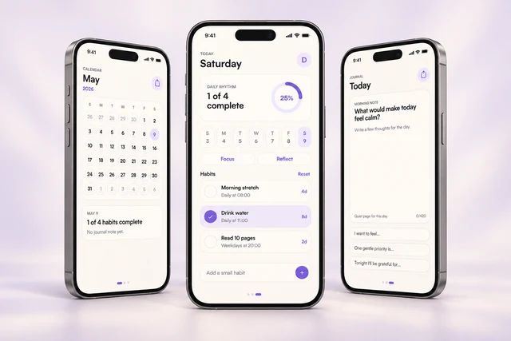
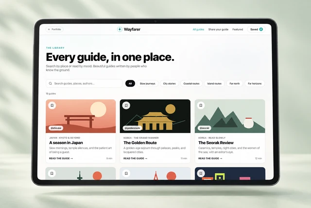
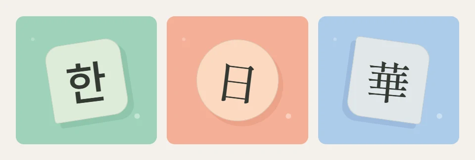

VISUAL DESIGNER · TORONTO
A few things
I’ve made.
Images, interfaces, and a little curiosity.
A short introduction to my work.
Selected work
01—05

01 / VISUAL CRAFT
Light & Form
One composition. Two ways to feel it.
Read the short story · 1 minColour does a lot of the talking.

02 / PRODUCT THINKING
Tend
A calmer daily habit.
Read the short story →
03 / INTERACTIVE SYSTEMS
Wayfarer
Places, with a little more context.
Read the short story →
04 / EDITORIAL STORIES
Karina
Portraiture meets page rhythm.
Read the short story →
05 / LEARNING THROUGH PLAY
First Words
A small start in another language.
Read the short story →Five short stories. Follow any one into the full experience when you want more.